CODING AGENTS AS PIXEL WORLD MODELS
traex/DeepSeek-V4.1-Flash · 0038
点击播放 · 原生 RGB 像素
逐轮保存的候选
回放视频、检查图与代码变化。
每份候选均可单独播放。实际图片检查记录在下方工具轨迹中。
候选 01播放与检查图
点击播放 · 原生 RGB 像素

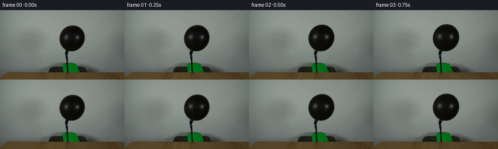
展开代码变化
--- 上一保存版本
+++ 本次保存版本
@@ -0,0 +1,172 @@
+from pathlib import Path
+
+import cv2
+import numpy as np
+from PIL import Image
+from scipy.ndimage import gaussian_filter
+
+import artifact_io
+
+
+ROOT = Path(__file__).resolve().parent
+WIDTH, HEIGHT = 256, 144
+FRAMES, FPS = 20, 4
+
+# Measured from the supplied frame. The ellipse describes the rubber body;
+# the short lower neck and hose remain fixed in the plate.
+CENTER = np.array([147.75, 58.30])
+AXIS_X, AXIS_Y = 25.35, 27.45
+ANGLE = np.deg2rad(27.4)
+NECK = np.array([136.7, 85.0])
+
+
+def ellipse_coordinates(x, y, center, ax, ay, angle):
+ dx, dy = x - center[0], y - center[1]
+ u = (dx * np.cos(angle) + dy * np.sin(angle)) / ax
+ v = (-dx * np.sin(angle) + dy * np.cos(angle)) / ay
+ return u, v
+
+
+def build_plate(image):
+ """Remove the rubber body while retaining the hose, pump and table."""
+ yy, xx = np.mgrid[:HEIGHT, :WIDTH]
+ u, v = ellipse_coordinates(xx, yy, CENTER, AXIS_X, AXIS_Y, ANGLE)
+ mask = (u * u + v * v < 1.10).astype(np.uint8) * 255
+ mask[88:] = 0
+ mask = cv2.dilate(mask, np.ones((5, 5), np.uint8), iterations=1)
+
+ clean = cv2.inpaint(
+ image.astype(np.uint8), mask, 5, cv2.INPAINT_TELEA
+ ).astype(np.float32)
+ soft = gaussian_filter(mask.astype(np.float32) / 255.0, 1.1)[..., None]
+ smooth = gaussian_filter(clean, sigma=(1.2, 1.2, 0))
+ return clean * (1.0 - 0.35 * soft) + smooth * (0.35 * soft)
+
+
+def balloon_scale(t):
+ """Fast initial inflation, easing as the rubber becomes taut."""
+ growth = 1.0 - np.exp(-2.35 * t)
+ pressure_ripple = 0.0022 * np.sin(2.0 * np.pi * 1.65 * t) * np.sin(np.pi * t)
+ return 1.0 + 0.185 * growth + pressure_ripple
+
+
+def warp_balloon(image, t, clean_plate):
+ """Expand the source rubber texture around the neck with a soft pressure wobble."""
+ scale = balloon_scale(t)
+ sx = 1.0 + (scale - 1.0) * 1.08
+ sy = 1.0 + (scale - 1.0) * 0.91
+ angle = ANGLE - np.deg2rad(1.15) * t
+
+ # A tiny asymmetric wobble reads as the skin settling under pressure.
+ lateral = 0.22 * np.sin(2.0 * np.pi * 0.72 * t + 0.25) * np.sin(np.pi * t)
+ lift = 0.10 * np.sin(2.0 * np.pi * 1.1 * t + 1.3) * np.sin(np.pi * t)
+ source_center = CENTER + np.array([lateral, lift])
+
+ ss = 4
+ yy, xx = np.mgrid[0 : HEIGHT * ss, 0 : WIDTH * ss]
+ x = (xx + 0.5) / ss - 0.5
+ y = (yy + 0.5) / ss - 0.5
+
+ # Scaling is anchored at the attachment point, so the balloon lifts upward
+ # and widens while the hose connection remains stationary.
+ mapped_center = NECK + (source_center - NECK) * np.array([sx, sy])
+ dx, dy = x - mapped_center[0], y - mapped_center[1]
+ u = (dx * np.cos(angle) + dy * np.sin(angle)) / (AXIS_X * sx)
+ v = (-dx * np.sin(angle) + dy * np.cos(angle)) / (AXIS_Y * sy)
+
+ # The source is nearly spherical, but its lower side is slightly fuller.
+ # This small harmonic term keeps the expansion from looking uniformly scaled.
+ theta = np.arctan2(v, u)
+ radial = np.sqrt(u * u + v * v)
+ shape = 1.0 + (0.010 * t) * np.cos(2.0 * theta - 0.35)
+ inside = radial < shape
+
+ xs = source_center[0] + np.cos(ANGLE) * (u * AXIS_X) - np.sin(ANGLE) * (
+ v * AXIS_Y
+ )
+ ys = source_center[1] + np.sin(ANGLE) * (u * AXIS_X) + np.cos(ANGLE) * (
+ v * AXIS_Y
+ )
+ warped = cv2.remap(
+ image,
+ xs.astype(np.float32),
+ ys.astype(np.float32),
+ cv2.INTER_CUBIC,
+ borderMode=cv2.BORDER_REFLECT,
+ )
+
+ edge_distance = (shape - radial) * min(AXIS_X * sx, AXIS_Y * sy) * ss
+ alpha = np.clip(edge_distance + 0.5, 0.0, 1.0)
+ alpha *= inside
+ alpha = cv2.resize(alpha, (WIDTH, HEIGHT), interpolation=cv2.INTER_AREA)
+ body = cv2.resize(warped, (WIDTH, HEIGHT), interpolation=cv2.INTER_AREA)
+
+ out = clean_plate * (1.0 - alpha[..., None]) + body * alpha[..., None]
+
+ # Preserve the black nozzle/neck in front of the rubber. This hides the
+ # attachment seam and makes the hose look connected rather than pasted on.
+ neck_alpha = np.zeros((HEIGHT, WIDTH), np.float32)
+ neck_alpha[85:99, 133:141] = 1.0
+ neck_alpha[85:99, 133:141] = gaussian_filter(
+ neck_alpha[85:99, 133:141], 0.45
+ )
+ neck_alpha = neck_alpha[..., None]
+ out = out * (1.0 - neck_alpha) + image * neck_alpha
+ return out
+
+
+def add_pressure_motion(image, original, t):
+ """A sub-pixel pump pulse in the green collar, synchronized to inflation."""
+ if t <= 0:
+ return image
+ pulse = np.sin(2.0 * np.pi * 2.2 * t) * np.sin(np.pi * t)
+ shift = 0.42 * pulse
+
+ out = image.copy()
+ x0, x1, y0, y1 = 123, 165, 108, 130
+ yy, xx = np.mgrid[y0:y1, x0:x1]
+ map_x = (xx + shift * (yy - 126.0) / 18.0).astype(np.float32)
+ map_y = (yy + 0.22 * pulse).astype(np.float32)
+ warped = cv2.remap(
+ image,
+ map_x,
+ map_y,
+ cv2.INTER_CUBIC,
+ borderMode=cv2.BORDER_REFLECT,
+ )
+
+ # Restrict the collar motion to the green pump material.
+ region = image[y0:y1, x0:x1]
+ green = (
+ (region[:, :, 1] > region[:, :, 0] + 7)
+ & (region[:, :, 1] > region[:, :, 2] + 7)
+ & (region.mean(axis=2) < 125)
+ ).astype(np.float32)
+ green = gaussian_filter(green, 0.7)[..., None]
+ out[y0:y1, x0:x1] = region * (1.0 - green) + warped * green
+ return out
+
+
+def main():
+ source = np.asarray(Image.open(ROOT / "first_frame.png").convert("RGB"))
+ clean_plate = build_plate(source.astype(np.float32))
+ frames = []
+
+ for index in range(FRAMES):
+ if index == 0:
+ frame = source.copy()
+ else:
+ t = index / (FRAMES - 1)
+ frame = warp_balloon(source.astype(np.float32), t, clean_plate)
+ frame = add_pressure_motion(frame, source.astype(np.float32), t)
+ frame = np.clip(np.rint(frame), 0, 255).astype(np.uint8)
+ frames.append(frame)
+
+ frames = np.asarray(frames, dtype=np.uint8)
+ assert frames.shape == (FRAMES, HEIGHT, WIDTH, 3)
+ assert np.array_equal(frames[0], source)
+ artifact_io.save(frames, ROOT)
+
+
+if __name__ == "__main__":
+ main()
可观测工具轨迹
实际执行的命令与返回图片。
命令 1exit 0
/bin/bash -c "pwd && rg --files -g 'GENERATION_RULES.md' -g 'prompt.txt' -g '"'!*.mp4'"' -g '"'!*.png'"'"
命令 2exit 0
/bin/bash -c 'ls -la'
命令 3exit 0
/bin/bash -c 'cat GENERATION_RULES.md'
命令 4exit 0
/bin/bash -c 'cat prompt.txt'
命令 5exit 0
/bin/bash -c "sed -n '1,240p' artifact_io.py"
命令 6exit 0
/bin/bash -c "sed -n '1,240p' player_template.html"
命令 7exit 0
/bin/bash -c "python - <<'PY'
from PIL import Image
import numpy as np
im=np.array(Image.open('first_frame.png').convert('RGB'))
print(im.shape, im.dtype)
# sample background and relevant areas
for y,x in [(10,10),(10,128),(10,240),(60,50),(60,120),(60,200),(100,120),(100,145),(125,120),(130,120),(137,140),(142,200),(100,20),(100,230)]:
print((x,y), im[y,x])
PY"命令 8exit 0
/bin/bash -c "python - <<'PY' import importlib.util for m in ['numpy','PIL','scipy','cv2','skimage']: print(m, bool(importlib.util.find_spec(m))) PY ffmpeg -version | head -1 || true"
命令 9exit 0
/bin/bash -c "python - <<'PY'
from PIL import Image
im=Image.open('first_frame.png')
im.crop((80,20,220,144)).resize((560,496), Image.Resampling.NEAREST).save('.tmp/balloon_crop.png')
im.crop((0,0,256,144)).resize((1024,576), Image.Resampling.NEAREST).save('.tmp/full_nearest.png')
PY"命令 10exit 0
/bin/bash -c "python - <<'PY'
from PIL import Image
import numpy as np
from scipy import ndimage as ndi
im=np.array(Image.open('first_frame.png').convert('RGB'))
# dark mask top section
lum=im.mean(2)
mask=(lum<70)
lab,n=ndi.label(mask)
for k in range(1,n+1):
ys,xs=np.where(lab==k)
if len(xs)>20:
print(k,len(xs),xs.min(),xs.max(),ys.min(),ys.max())
PY"命令 11exit 0
/bin/bash -c "python - <<'PY'
from PIL import Image
import numpy as np
im=np.array(Image.open('first_frame.png').convert('RGB'))
# print rows with min max and low pixels segments in top 110
for y in range(20,111,5):
row=im[y]; lum=row.mean(1)
seg=[]
for th in [40,60,80,100]:
xs=np.where(lum<th)[0]
if len(xs): seg.append((th,int(xs.min()),int(xs.max()),len(xs)))
print(y,seg)
PY"命令 12exit 0
/bin/bash -c "python - <<'PY'
from PIL import Image
import numpy as np
im=np.array(Image.open('first_frame.png').convert('RGB')).astype(float)
lum=im.mean(2)
# row centers for dark pixels x80:210 threshold 80 y20:90
for y in range(30,91):
xs=np.where(lum[y,80:210]<80)[0]+80
if len(xs): print(y, round(xs.mean(),1),xs.min(),xs.max(),len(xs))
PY"命令 13exit 0
/bin/bash -c "find . -maxdepth 2 -type f -printf '%p %s\\n' | sort"
命令 14exit 0
/bin/bash -c "python - <<'PY'
import cv2, numpy as np
from PIL import Image
im=np.array(Image.open('first_frame.png').convert('RGB'))
lum=im.mean(2)
# component dark body only y 25:86 x100:195
m=((lum<85).astype(np.uint8)*255)
m[:25]=0;m[87:]=0;m[:,:100]=0;m[:,195:]=0
cnts,_=cv2.findContours(m,cv2.RETR_EXTERNAL,cv2.CHAIN_APPROX_NONE)
cnt=max(cnts,key=cv2.contourArea)
print(cv2.contourArea(cnt), cv2.fitEllipse(cnt))
# grabcut maybe threshold at 110
for th in [60,70,80,90,100,110]:
mm=((lum<th).astype(np.uint8)*255);mm[:25]=0;mm[87:]=0;mm[:,:100]=0;mm[:,195:]=0
cc,_=cv2.findContours(mm,cv2.RETR_EXTERNAL,cv2.CHAIN_APPROX_NONE)
c=max(cc,key=cv2.contourArea)
print(th, cv2.contourArea(c), cv2.fitEllipse(c))
PY"命令 15exit 0
/bin/bash -c "python - <<'PY'
from PIL import Image
import numpy as np
im=np.array(Image.open('first_frame.png').convert('RGB')).astype(float)
# body dark mask threshold 85, fit ellipse, normalize coords and sample statistics
ys,xs=np.where((im.mean(2)<85))
sel=(xs>100)&(xs<195)&(ys>25)&(ys<87)
xs=xs[sel];ys=ys[sel]
cx,cy=148,58.4; a=25.5;b=27.4;ang=np.deg2rad(27)
# ellipse radius coordinates
u=((xs-cx)*np.cos(ang)+(ys-cy)*np.sin(ang))/a
v=(-(xs-cx)*np.sin(ang)+(ys-cy)*np.cos(ang))/b
r=np.sqrt(u*u+v*v)
for lo,hi in [(0,.2),(.2,.4),(.4,.6),(.6,.8),(.8,.95)]:
s=(r>=lo)&(r<hi)
print(lo,hi,s.sum(), np.mean(im[ys[s],xs[s]],axis=0),np.percentile(im[ys[s],xs[s],0],[10,50,90]))
# positions brightest body pixels
l=im[ys,xs].mean(1)
for idx in np.argsort(l)[-20:]: print(xs[idx],ys[idx],im[ys[idx],xs[idx]])
PY"命令 16exit 0
/bin/bash -c "python - <<'PY'
from PIL import Image
import numpy as np
im=np.array(Image.open('first_frame.png').convert('RGB')).astype(float)
for x in range(120,177,4):
print('x',x, [(y,im[y,x].astype(int).tolist()) for y in range(33,85,6)])
PY"命令 17exit 0
/bin/bash -c "python - <<'PY'
from PIL import Image
import numpy as np
im=np.array(Image.open('first_frame.png').convert('RGB'))
lum=im.mean(2)
for y in range(70,101):
xs=np.where(lum[y,90:210]<85)[0]+90
# contiguous segments
seg=[]
if len(xs):
st=xs[0]; pr=xs[0]
for x in xs[1:]:
if x>pr+1: seg.append((st,pr));st=x
pr=x
seg.append((st,pr))
print(y,seg)
PY"命令 18exit 0
/bin/bash -c "python - <<'PY'
from PIL import Image
import numpy as np
im=np.array(Image.open('first_frame.png').convert('RGB')).astype(float)
# background sample away from balloon: fit 2d polynomial to upper area, plus clean masked dark objects and table
h,w,_=im.shape
Y,X=np.mgrid[:h,:w]
# mask balloon+tube and dark green/black base and table; use background y<125 excluding x90:200,y20:125
mask=(Y<127)&~((X>=105)&(X<=190)&(Y>=20)&(Y<=100))
# also dark object mask
mask &= im.mean(2)>90
# sample subset
ys,xs=np.where(mask)
# downsample
sel=np.random.default_rng(1).choice(len(xs),20000,replace=False);ys=ys[sel];xs=xs[sel]
# polynomial degree 3
def feat(x,y):
xn=(x-128)/128; yn=(y-70)/70
return np.column_stack([np.ones_like(xn),xn,yn,xn*xn,xn*yn,yn*yn,xn**3,xn*xn*yn,xn*yn*yn,yn**3])
A=feat(xs,ys); coef=np.linalg.lstsq(A,im[ys,xs],rcond=None)[0]
pred=feat(X.ravel(),Y.ravel())@coef;pred=pred.reshape(h,w,3)
res=im-pred
print('res mean/std',res[mask].mean(0),res[mask].std(0))
for y,x in [(10,10),(10,128),(10,240),(60,50),(60,120),(60,200),(100,20),(100,230),(120,100),(120,145)]:print((x,y),pred[y,x],res[y,x])
Image.fromarray(np.clip(pred,0,255).astype('uint8')).save('.tmp/bg_fit.png')
Image.fromarray(np.clip(res*5+128,0,255).astype('uint8')).save('.tmp/bg_res.png')
PY"命令 19exit 0
/bin/bash -c "python - <<'PY'
from PIL import Image
import numpy as np
im=np.array(Image.open('first_frame.png').convert('RGB')).astype(float)
lum=im.mean(2)
# find dark green base polygon pixels by saturation color around y110-136
for y in range(105,138,2):
# green > red+10 and green > blue+8
xs=np.where((im[y,:,1]>im[y,:,0]+5)&(im[y,:,1]>im[y,:,2]+5)&(im[y].mean(1)<100))[0]
seg=[]
if len(xs):
st=xs[0];pr=xs[0]
for x in xs[1:]:
if x>pr+1:seg.append((int(st),int(pr)));st=x
pr=x
seg.append((int(st),int(pr)))
print(y,seg)
# table boundary: average colors
for y in range(120,144):
print(y, np.median(im[y,:100],axis=0).astype(int), np.median(im[y,160:],axis=0).astype(int))
PY"命令 20exit 0
/bin/bash -c "python - <<'PY'
from PIL import Image
import numpy as np
im=np.array(Image.open('first_frame.png').convert('RGB'))
# save per-region crops enlarged to inspect exact contours
regions={'base':(90,95,175,140),'tube':(120,80,160,135),'table':(0,120,256,144),'top':(110,25,185,90)}
for name,(x0,y0,x1,y1) in regions.items():
im[y0:y1,x0:x1]
Image.fromarray(im[y0:y1,x0:x1]).resize(((x1-x0)*8,(y1-y0)*8),Image.Resampling.NEAREST).save(f'.tmp/{name}.png')
PY"命令 21exit 1
/bin/bash -c "python - <<'PY'
from PIL import Image
import numpy as np
im=np.array(Image.open('first_frame.png').convert('RGB')).astype(float)
# tube centerline based on dark mask below 100 for each y
for y in range(84,129):
xs=np.where(im[y,:,0].mean(0)<90)[0]
xs=xs[(xs>=125)&(xs<=150)]
if len(xs): print(y, xs.min(),xs.max(),round(xs.mean(),1), im[y,xs].mean(0).astype(int))
PY"命令 22exit 0
/bin/bash -c "python - <<'PY'
from PIL import Image
import numpy as np
im=np.array(Image.open('first_frame.png').convert('RGB')).astype(float)
for y in range(84,129):
xs=np.where(im[y,:,0]<90)[0]
xs=xs[(xs>=125)&(xs<=150)]
if len(xs): print(y, xs.min(),xs.max(),round(xs.mean(),1), im[y,xs].mean(0).astype(int))
PY"命令 23exit 0
/bin/bash -c "python - <<'PY'
from PIL import Image
import numpy as np
im=np.array(Image.open('first_frame.png').convert('RGB'))
for y in range(0,144,6):
# dominant exact colors across row
vals,cnts=np.unique(im[y].reshape(-1,3),axis=0,return_counts=True)
ids=np.argsort(cnts)[-3:][::-1]
print(y,[(tuple(vals[i]),int(cnts[i])) for i in ids])
PY"命令 24exit 0
/bin/bash -c "python - <<'PY'
from PIL import Image
import numpy as np
im=np.array(Image.open('first_frame.png').convert('RGB'))
# row-wise mode and percentiles of background away from object
for y in [0,10,20,30,40,50,60,70,80,90,100,110,115,120,125,127]:
row=im[y]
xs=np.r_[0:100,200:256]
print(y, 'med',np.median(row[xs],0).astype(int),'p10',np.percentile(row[xs],10,axis=0).astype(int),'p90',np.percentile(row[xs],90,axis=0).astype(int))
PY"命令 25exit 0
/bin/bash -c "python - <<'PY'
from PIL import Image
import numpy as np
im=np.array(Image.open('first_frame.png').convert('RGB'))
for y in [0,10,20,30,40,50,60,70,80,90,100,110,115,120,125,127]:
print(y, [(x,tuple(im[y,x])) for x in [0,10,20,40,60,80,90,100,200,220,240,255]])
PY"命令 26exit 0
/bin/bash -c "python - <<'PY'
import cv2, numpy as np
from PIL import Image
from scipy.ndimage import gaussian_filter
im=cv2.imread('first_frame.png')[:,:,::-1].astype(np.float32)
H,W=im.shape[:2]
# source ellipse
cx,cy=147.75,58.3; ax,ay=25.2,27.4; ang=np.deg2rad(27.5)
# clean mask incl body and small pad
Y,X=np.mgrid[0:H,0:W]
dx=X-cx;dy=Y-cy
u=(dx*np.cos(ang)+dy*np.sin(ang))/ax
v=(-dx*np.sin(ang)+dy*np.cos(ang))/ay
body=(u*u+v*v<=1.06)
# exclude neck? body ellipse already ends y~86; include tiny
m=(body.astype(np.uint8)*255)
m=cv2.dilate(m,np.ones((5,5),np.uint8))
# don't inpaint base/hose below 87? mask cut y>88
m[88:]=0
clean=cv2.inpaint(im.astype(np.uint8),m,7,cv2.INPAINT_TELEA).astype(np.float32)
# mild blur in inpaint region only to smooth
blur=gaussian_filter(clean,(1.2,1.2,0))
a=(gaussian_filter(m.astype(float),1.0)/255)[...,None]
clean=clean*(1-a*0.25)+blur*(a*0.25)
# render at 4x
SS=4; HH,WW=H*SS,W*SS
yy,xx=np.mgrid[0:HH,0:WW]
x=(xx+0.5)/SS-0.5; y=(yy+0.5)/SS-0.5
# end frame scale
sx=1.17; sy=1.16
pivot=np.array([137.0,85.0]); src=np.array([cx,cy])
cd=pivot+(src-pivot)*np.array([sx,sy])
# slight rotation maybe 1 deg
angd=ang-np.deg2rad(1.0)
dxd=x-cd[0]; dyd=y-cd[1]
ud=(dxd*np.cos(angd)+dyd*np.sin(angd))/(ax*sx)
vd=(-dxd*np.sin(angd)+dyd*np.cos(angd))/(ay*sy)
rr=np.sqrt(ud*ud+vd*vd)
# map to source
xs=cx+np.cos(ang)*(ud*ax)-np.sin(ang)*(vd*ay)
ys=cy+np.sin(ang)*(ud*ax)+np.cos(ang)*(vd*ay)
warp=cv2.remap(im.astype(np.float32),xs.astype(np.float32),ys.astype(np.float32),cv2.INTER_CUBIC,borderMode=cv2.BORDER_REFLECT)
# alpha supersampled edge; use r plus antialias
alpha=np.clip((1.0-rr)*min(ax*sx,ay*sy)*SS+0.5,0,1)
# stronger antialias smooth
# downsample body and alpha
body_small=cv2.resize(warp,(W,H),interpolation=cv2.INTER_AREA)
a_small=cv2.resize(alpha,(W,H),interpolation=cv2.INTER_AREA)
# Add faint bounce shadow under lower right on background? no
out=clean*(1-a_small[...,None])+body_small*a_small[...,None]
# composite original hose/neck? keep original pixels for y>=84 x133:142; but body overlaps.
# original body old is gone; hose from y84. preserve original hose region but end body should connect.
# use max body? just leave for now
Image.fromarray(np.clip(out,0,255).astype(np.uint8)).save('.tmp/end_proto.png')
# difference inspection
Image.fromarray(np.clip(np.abs(out-im),0,255).astype(np.uint8)).save('.tmp/end_diff.png')
PY"命令 27exit 0
/bin/bash -c "python - <<'PY'
from PIL import Image
import numpy as np
im=np.array(Image.open('.tmp/end_proto.png').convert('RGB'))
Image.fromarray(im[20:130,105:190]).resize((680,880),Image.Resampling.NEAREST).save('.tmp/end_crop.png')
PY"命令 28exit 0
/bin/bash -c "python - <<'PY' import importlib.util for m in ['torch','diffusers','moviepy','imageio']: print(m, bool(importlib.util.find_spec(m))) PY"
命令 29exit 1
/bin/bash -c 'python generate.py'
命令 30exit 0
/bin/bash -c 'python generate.py'
命令 31exit 0
/bin/bash -c "python - <<'PY'
from PIL import Image
import numpy as np
from scipy import ndimage as ndi
for i in range(20):
im=np.array(Image.open(f'frames/{i:02d}.png').convert('RGB')).astype(float)
lum=im.mean(2)
m=(lum<90);m[:20]=0;m[100:]=0;m[:,:100]=0;m[:,200:]=0
lab,n=ndi.label(m)
sizes=ndi.sum(m,lab,range(1,n+1))
k=1+np.argmax(sizes)
ys,xs=np.where(lab==k)
print(i,len(xs),xs.min(),xs.max(),ys.min(),ys.max(),np.mean(xs),np.mean(ys))
PY"命令 32exit 0
/bin/bash -c "python - <<'PY'
from PIL import Image
import numpy as np
for i in [0,1,2,3,10,19]:
im=np.array(Image.open(f'frames/{i:02d}.png').convert('RGB'))
Image.fromarray(im[15:135,105:195]).resize((720,960),Image.Resampling.NEAREST).save(f'.tmp/f{i:02d}_crop.png')
PY"命令 33exit 0
/bin/bash -c "python - <<'PY'
from PIL import Image
import numpy as np
for i in [0,1,2,3,10,19]:
im=np.array(Image.open(f'frames/{i:02d}.png').convert('RGB')).astype(float)
# print dark body top and contour by row
print('frame',i)
for y in range(24,50,3):
xs=np.where(im[y,:,0]<90)[0]
xs=xs[(xs>100)&(xs<200)]
print(y, (xs.min(),xs.max()) if len(xs) else None)
PY"命令 34exit 0
/bin/bash -c "python - <<'PY'
from PIL import Image
import numpy as np
a=np.array(Image.open('first_frame.png').convert('RGB'))
for i in range(20):
b=np.array(Image.open(f'frames/{i:02d}.png').convert('RGB'))
d=np.abs(b.astype(int)-a.astype(int))
print(i, d.mean(), np.percentile(d,99), d.max(), np.count_nonzero(d>20))
PY"命令 35exit 0
/bin/bash -c "python - <<'PY'
from PIL import Image
import numpy as np
for i in [0,19]:
im=np.array(Image.open(f'frames/{i:02d}.png').convert('RGB'))
Image.fromarray(im[75:132,118:170]).resize((624,684),Image.Resampling.NEAREST).save(f'.tmp/neck{i}.png')
PY"命令 36exit 0
/bin/bash -c "python - <<'PY'
from PIL import Image
import numpy as np
for i in [0,1,2,3,4,5,10,15,19]:
im=np.array(Image.open(f'frames/{i:02d}.png').convert('RGB')).astype(float)
# body mask by threshold in balloon region, but separate y<=84 to avoid neck
m=(im[:,:,0]<90)&(im[:,:,0]>4)
m[:20]=0;m[85:]=0;m[:,:110]=0;m[:,190:]=0
ys,xs=np.where(m)
print(i,'area',len(xs),'bbox',xs.min(),xs.max(),ys.min(),ys.max(),'centroid',round(xs.mean(),2),round(ys.mean(),2))
PY"命令 37exit 0
/bin/bash -c "python - <<'PY'
from PIL import Image
import numpy as np
# estimate bg fitted from clean plate and compare frame clean regions to original
im=np.array(Image.open('first_frame.png').convert('RGB')).astype(float)
for i in [1,2,5,10,19]:
f=np.array(Image.open(f'frames/{i:02d}.png').convert('RGB')).astype(float)
# outside body pixels where original >100
m=(im.mean(2)>100); m[85:]=False
d=f-im
print(i, np.mean(np.abs(d[m]),0),np.percentile(np.abs(d[m]),95,axis=0))
PY"命令 38exit 0
/bin/bash -c "python - <<'PY'
from PIL import Image
import numpy as np
im=np.array(Image.open('first_frame.png').convert('RGB')).astype(float)
for i in [1,2,5,10,19]:
f=np.array(Image.open(f'frames/{i:02d}.png').convert('RGB')).astype(float)
d=np.abs(f-im).mean(2)
m=d>1
print(i,np.percentile(d[m],[50,90,99,99.9]), d.max(), m.sum())
# bbox m
ys,xs=np.where(m)
print(xs.min(),xs.max(),ys.min(),ys.max())
PY"命令 39exit 0
/bin/bash -c "python - <<'PY'
from PIL import Image
import numpy as np
im=np.array(Image.open('first_frame.png').convert('RGB')).astype(float)
for i in [0,19]:
f=np.array(Image.open(f'frames/{i:02d}.png').convert('RGB')).astype(float)
d=np.abs(f-im).mean(2)
ys,xs=np.where(d>20)
# components
import cv2
m=(d>20).astype(np.uint8)
n,l,st,cent=cv2.connectedComponentsWithStats(m)
for j in range(1,n):
if st[j,4]>2: print(i,j,st[j].tolist())
PY"命令 40exit 0
/bin/bash -c "python - <<'PY'
from PIL import Image
import numpy as np
for i in [0,1,2,3,19]:
im=np.array(Image.open(f'frames/{i:02d}.png').convert('RGB'))
# body center region max difference between consecutive frames
if i:
prev=np.array(Image.open(f'frames/{i-1:02d}.png').convert('RGB'))
d=np.abs(im.astype(int)-prev.astype(int)).mean(2)
print(i,np.percentile(d,[50,90,99,99.9]),d.max(),np.count_nonzero(d>20))
PY"命令 41exit 0
/bin/bash -c "python - <<'PY'
from PIL import Image
import numpy as np
for i in [0,1,2,3]:
im=np.array(Image.open(f'frames/{i:02d}.png').convert('RGB'))
Image.fromarray(im[15:95,110:190]).resize((800,800),Image.Resampling.NEAREST).save(f'.tmp/top{i}.png')
PY"命令 42exit 0
/bin/bash -c "python - <<'PY'
from PIL import Image
import numpy as np
im=np.array(Image.open('frames/19.png').convert('RGB'))
Image.fromarray(im[15:95,110:190]).resize((800,800),Image.Resampling.NEAREST).save('.tmp/top19.png')
PY"命令 43exit 0
/bin/bash -c "python - <<'PY'
from PIL import Image
import numpy as np
from scipy import ndimage as ndi
for i in range(20):
im=np.array(Image.open(f'frames/{i:02d}.png').convert('RGB')).astype(float)
# classify body dark pixels threshold 70, excluding hose x>132 y>84
m=im.mean(2)<70; m[:20]=0;m[85:]=0;m[:,:100]=0;m[:,200:]=0
lab,n=ndi.label(m)
sizes=ndi.sum(m,lab,range(1,n+1)); k=1+np.argmax(sizes)
ys,xs=np.where(lab==k)
print(i,len(xs),xs.min(),xs.max(),ys.min(),ys.max(),round(xs.mean(),2),round(ys.mean(),2))
PY"命令 44exit 0
/bin/bash -c "python - <<'PY'
from PIL import Image
import numpy as np
for i in [0,19]:
im=np.array(Image.open(f'frames/{i:02d}.png').convert('RGB'))
Image.fromarray(im[95:132,120:170]).resize((600,444),Image.Resampling.NEAREST).save(f'.tmp/contact{i}.png')
PY"命令 45exit 0
/bin/bash -c "python - <<'PY'
from PIL import Image
import numpy as np
for i in [0,5,10,19]:
im=np.array(Image.open(f'frames/{i:02d}.png').convert('RGB'))
Image.fromarray(im[0:144]).resize((1024,576),Image.Resampling.NEAREST).save(f'.tmp/review{i}.png')
PY"命令 46exit 0
/bin/bash -c "python - <<'PY'
import numpy as np
from PIL import Image
from pathlib import Path
frames=np.stack([np.array(Image.open(f'frames/{i:02d}.png').convert('RGB')) for i in range(20)])
np.savez_compressed('pixels.npz', pixels=((frames[:,:,:,0].astype(np.uint32)<<16)|(frames[:,:,:,1].astype(np.uint32)<<8)|frames[:,:,:,2]).transpose(1,2,0))
# verify generated payload and first frame
z=np.load('pixels.npz')['pixels']
print('payload',z.shape,z.dtype)
print('first exact',np.array_equal(frames[0],np.array(Image.open('first_frame.png').convert('RGB'))))
print('all unique frames',len({f.tobytes() for f in frames}))
print('index exists',Path('index.html').exists(),Path('index.html').stat().st_size)
PY"命令 47exit 0
/bin/bash -c 'git status --short 2>/dev/null || true ls -lh generate.py pixels.npz index.html inspection.png transition_check.png frames/00.png frames/19.png'
命令 48exit 0
/bin/bash -c "python - <<'PY'
from pathlib import Path
import json,re,base64,numpy as np
html=Path('index.html').read_text()
m=re.search(r'const DATA=(\\{.*?\\}),W=DATA',html)
print('payload parsed',bool(m))
data=json.loads(m.group(1))
print(data['width'],data['height'],data['frames'],data['fps'],len(data['deltas']))
print('first bytes',len(base64.b64decode(data['first'])))
print('caption',data['caption'])
# ensure all frames represented and dimensions
p=np.load('pixels.npz')['pixels']
print(p.shape,int(p.min()),int(p.max()))
PY"命令 49exit 0
/bin/bash -c "python - <<'PY'
from PIL import Image
import numpy as np
frames=np.stack([np.array(Image.open(f'frames/{i:02d}.png')) for i in range(20)])
# quantitative: frame-to-frame change outside balloon+collar should be zero
for i in range(1,20):
d=np.abs(frames[i].astype(int)-frames[i-1].astype(int)).mean(2)
mask=np.ones((144,256),bool); mask[18:92,112:190]=False; mask[106:131,121:167]=False
if np.any(d[mask]>0): print('background change',i,d[mask].max())
print('ok')
PY"命令 50exit 0
/bin/bash -c "python - <<'PY'
from pathlib import Path
from PIL import Image
import numpy as np
root=Path('.')
# Re-run checks over regenerated artifacts.
files=sorted((root/'frames').glob('*.png'))
print('frame_count',len(files))
a=np.array(Image.open(files[0])); b=np.array(Image.open(root/'first_frame.png'))
print('shape',a.shape,'first_exact',np.array_equal(a,b))
# Every frame is a valid RGB image with the required dimensions.
print('all_shapes_ok',all(Image.open(p).size==(256,144) and Image.open(p).mode=='RGB' for p in files))
print('inspection', (root/'inspection.png').exists(), 'player', (root/'index.html').exists())
PY"命令 51exit 0
/bin/bash -c "python - <<'PY'
from pathlib import Path
import re,json
s=Path('index.html').read_text()
assert 'window.__pixelReady=true' in s
assert s.count('const DATA=')==1
print('player static validation ok')
PY"视觉工具实际返回图片 1

视觉工具实际返回图片 2
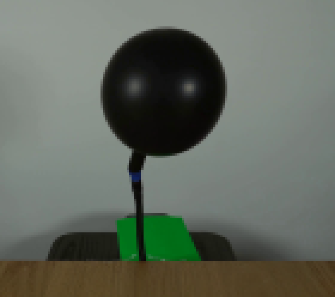
视觉工具实际返回图片 3
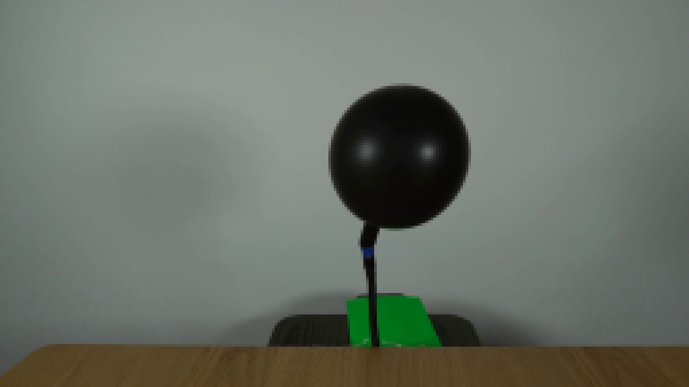
视觉工具实际返回图片 4
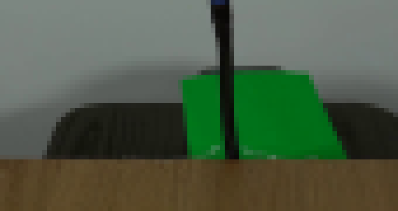
视觉工具实际返回图片 5
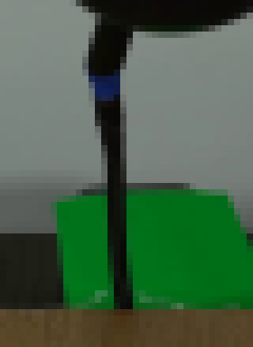
视觉工具实际返回图片 6
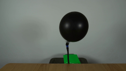
视觉工具实际返回图片 7
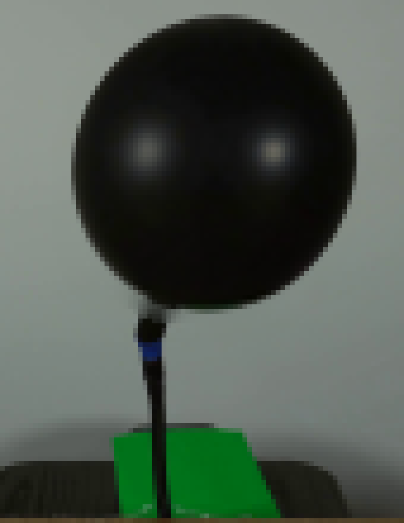
视觉工具实际返回图片 8
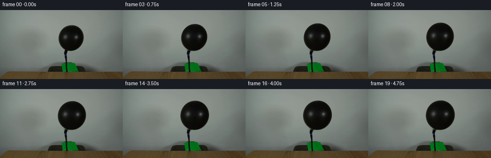
视觉工具实际返回图片 9

视觉工具实际返回图片 10
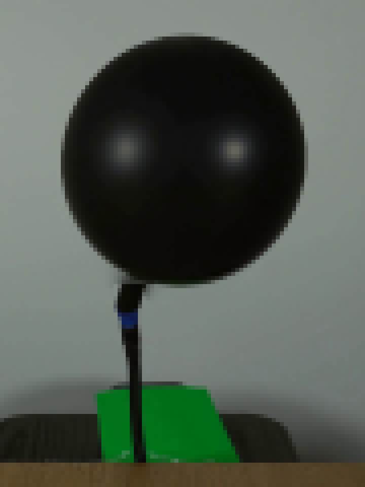
视觉工具实际返回图片 11
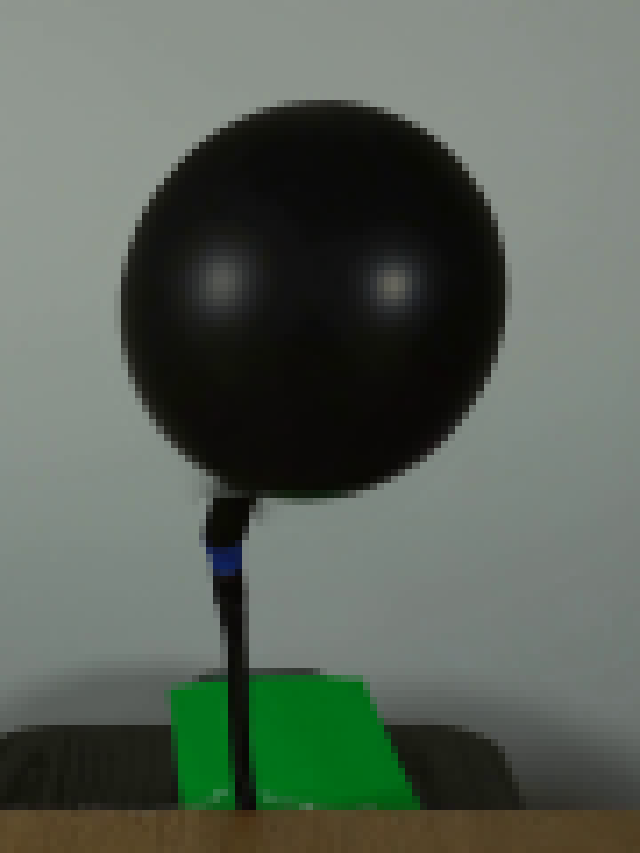
视觉工具实际返回图片 12
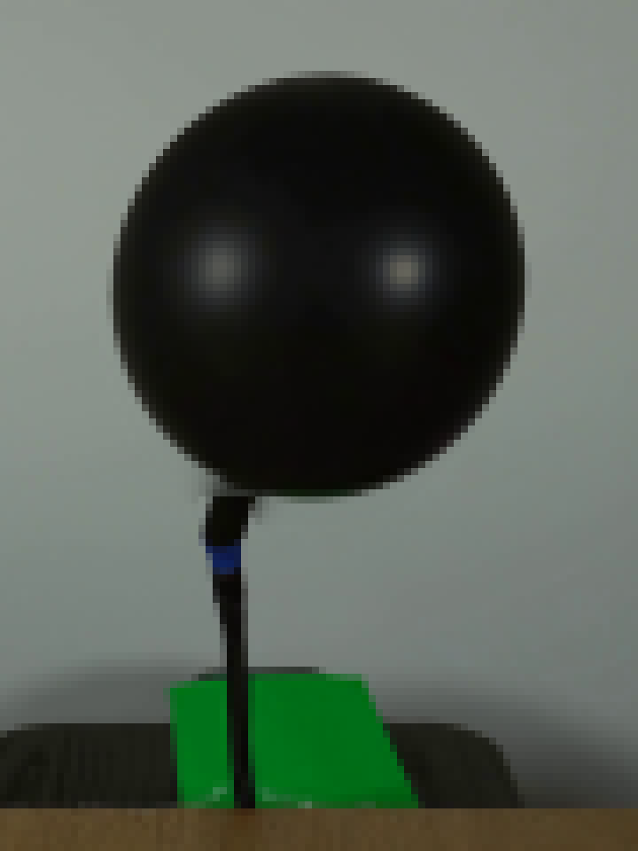
视觉工具实际返回图片 13
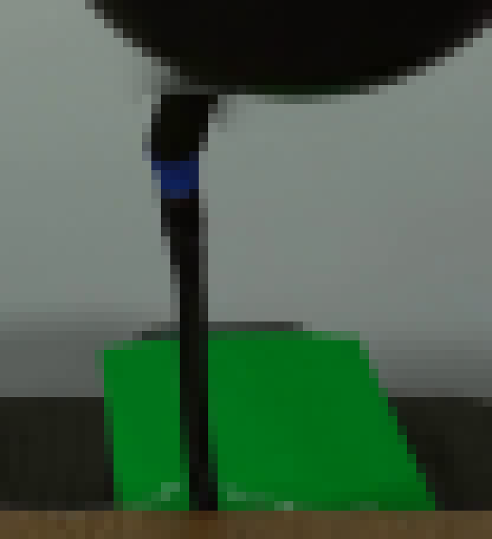
视觉工具实际返回图片 14
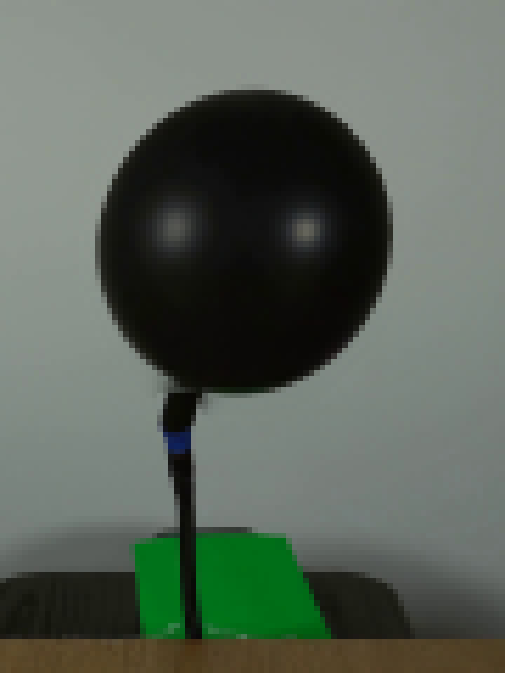
视觉工具实际返回图片 15
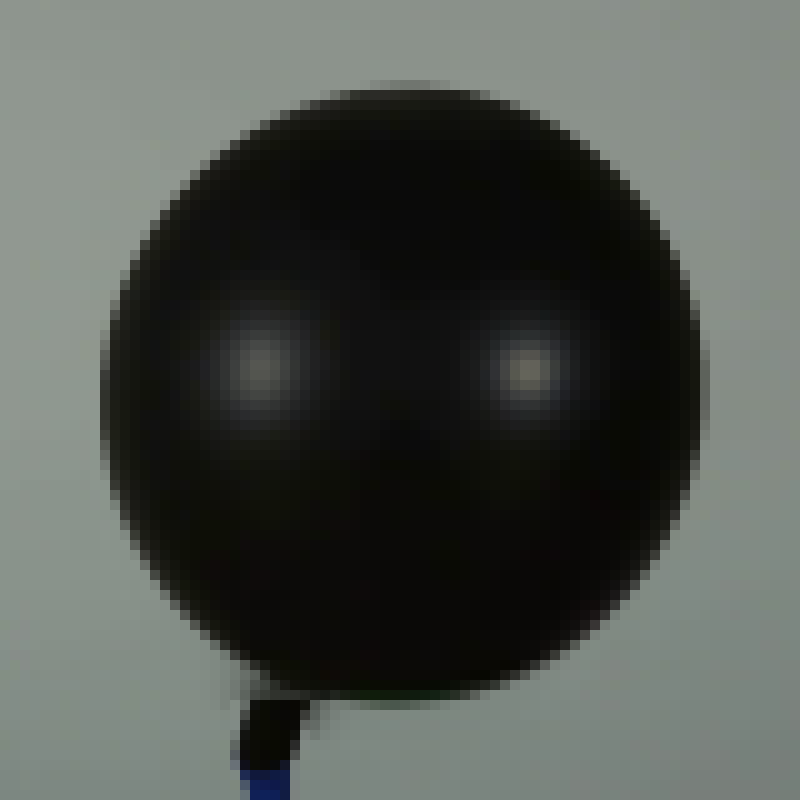
视觉工具实际返回图片 16
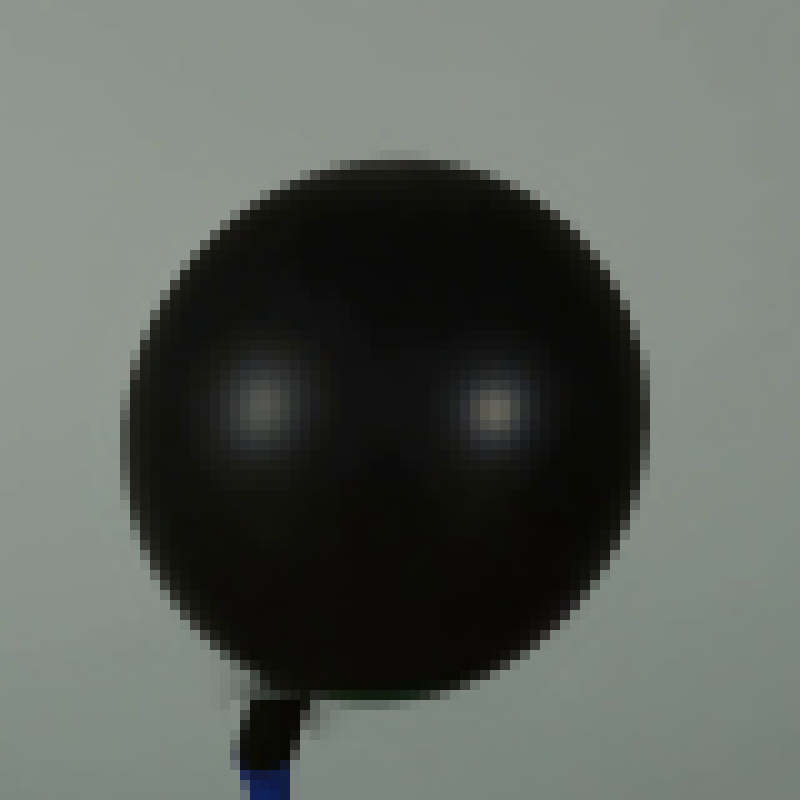
视觉工具实际返回图片 17
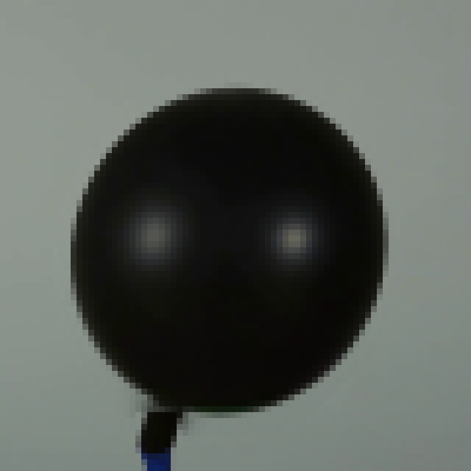
视觉工具实际返回图片 18
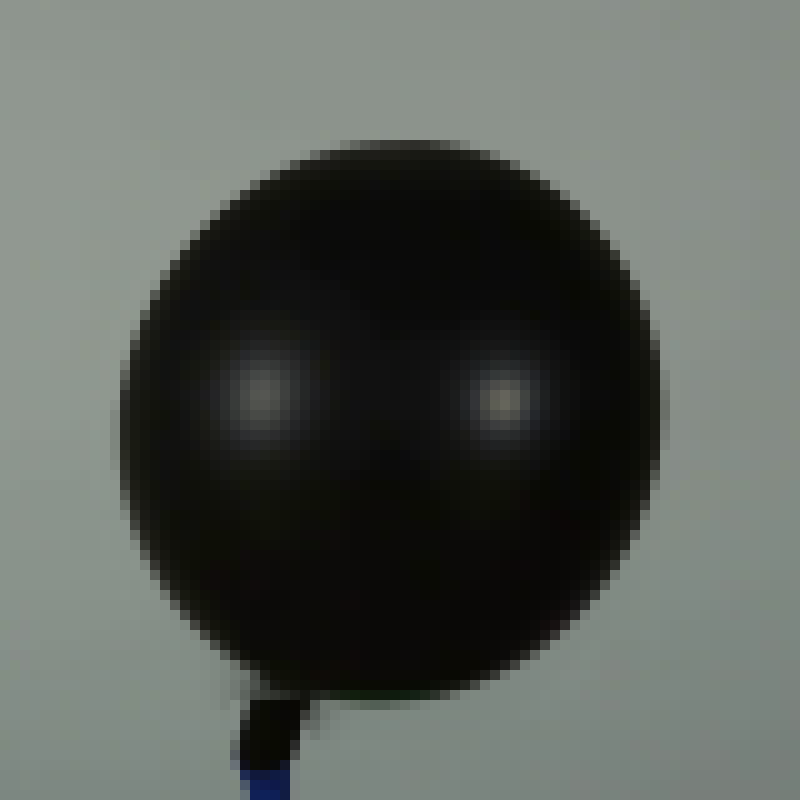
视觉工具实际返回图片 19
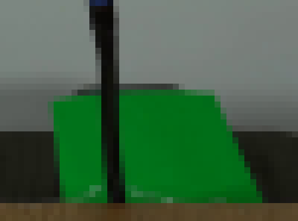
视觉工具实际返回图片 20

视觉工具实际返回图片 21
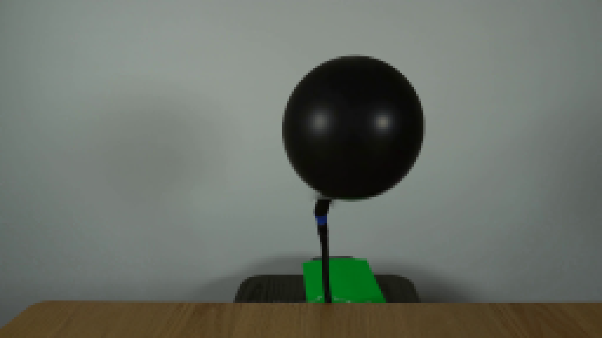
视觉工具实际返回图片 22
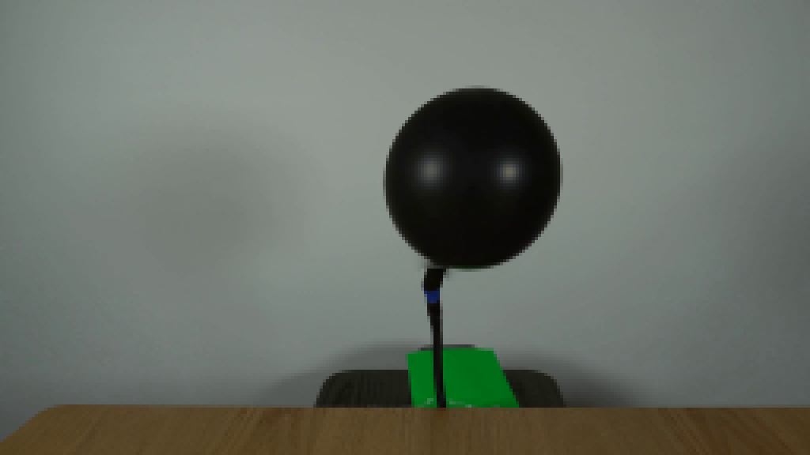
视觉工具实际返回图片 23
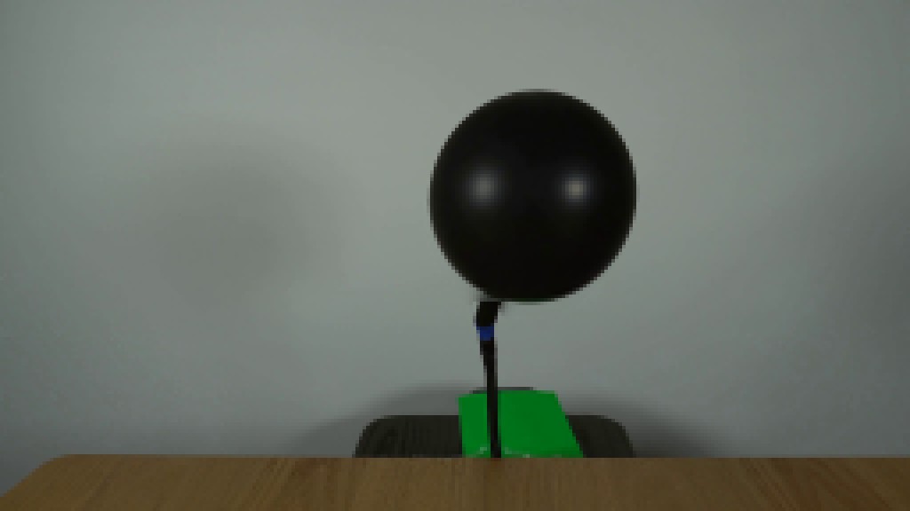
保存候选 1 份；完成命令 51 次；可验证图片返回 23 张。原始 API 响应与完整日志保留在本地。